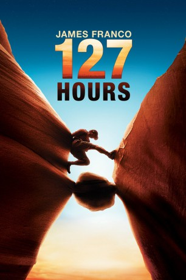

#571 127 Hours
Auszeichnungen: für 6 Oscars nominiert
 
 IMDB-Wertung: 7.6 / 10
IMDB-Wertung: 7.6 / 10  Metascore: 82
Metascore: 82 
Aron Ralston ist ein enthusiastischer Kletterer, den am Freitag Abend Niemand mehr auf seinem Weg zum Grand Canyon aufhalten kann. Dort angekommen, steigt der erfahrene Kletterer gleich in das labyrinthische Gewirr der Felsformationen ein, trifft aber überraschend auf zwei junge Frauen, die sich verirrt haben. Er zeigt Kristi und Megan einen geheimen Badeort, an dem sie viel Spaß haben, aber bald schon macht sich Aron wieder auf seinen eigenen Weg. Doch trotz hervorragender Ortskenntnis, professioneller Ausrüstung und Erfahrung in diesem Gelände, unterschätzt er die Festigkeit eines Felsbrocken innerhalb einer tiefen Spalte, der auf ihn fällt und seinen rechten Arme so fest einklemmt, dass er ihn nicht mehr freimachen kann. Ohne Aussicht auf Hilfe, versucht er zu überleben...
Jahr: 2010
Dauer: 94 Minuten
FSK: 12
Land: USA Studio: Fox Searchlight PicturesTonspuren: DTS - ,
Untertitel: Deutsch, Englisch,
Auflösung: 1080p (1920x1040) Größe: 11468 MB
Genre: Abenteuer, Biographie, Drama, Thriller
Regisseur:  Danny Boyle
Danny Boyle
Drehbuch: Danny Boyle, Simon Beaufoy, Aron Ralston
Soundtrack: A.R. Rahman
Darsteller:
 James Franco als Aron Ralston
James Franco als Aron Ralston Kate Mara als Kristi
Kate Mara als Kristi Amber Tamblyn als Megan
Amber Tamblyn als Megan Treat Williams als Aron's Dad
Treat Williams als Aron's Dad Kate Burton als Aron's Mom
Kate Burton als Aron's Mom- Bailee Michelle Johnson als Sonja Age 10
- Cl��mence Poésy als Rana
- Fenton Quinn als Blue John
 Lizzy Caplan als Sonja
Lizzy Caplan als Sonja- Pieter Jan Brugge als Eric Meijer
- Rebecca C. Olson als Monique Meijer
- Norman Lehnert als Dan
- Darin Southam als Zach
- Elizabeth Hales als Patron , uncredited
- Zachary Haycock als Reporter , uncredited
- Brad Johnson als Friend of Aaron , uncredited
- Lonzo Liggins als Reporter , uncredited
- Samantha Marsden als Media person / Basketball Game Fan , uncredited
- Kelsie Mathews als Basketball Fan , uncredited
- Kyle Paul als Best Man , uncredited
- Aron Ralston als Himself , uncredited
- Sean Bott als Aron's Friend
- Koleman Stinger als Aron Age 5
- John Lawrence als Brian
- Parker Hadley als Aron Age 15
- Peter Joshua Hull als Boy on Sofa
- Jeffrey Wood als Andy Meijer
- Xmas Lutu als Helicopter Co-Pilot
- Terry S. Mercer als Helicopter Pilot
- Robert Bear als Aron's Friend , uncredited
- Luke Drake als Aron's Friend , uncredited
- Christopher K. Hagadone als Basketball Fan , uncredited
- Kelly Higgins als Fan , uncredited
- Amber Mccoy als Bridesmaid & Girl in jeep , uncredited
- Priscilla Poland als Bridesmaid , uncredited
- Jessica Ralston als Herself , uncredited
- Amy Savannah als Basketball Fan , uncredited
- Stacey Ann Turner als Aron's Friend , uncredited
Datei: X:\2010(A-F)\127 Hours (2010, FSK12, 1920x1040).mkv seit 11.03.2015
Festplatte: HD 2009(G-Z)-2010(A-F)
 Es gibt insgesamt 95 Filme in der Gruppe '2010(A-F)'
Es gibt insgesamt 95 Filme in der Gruppe '2010(A-F)'